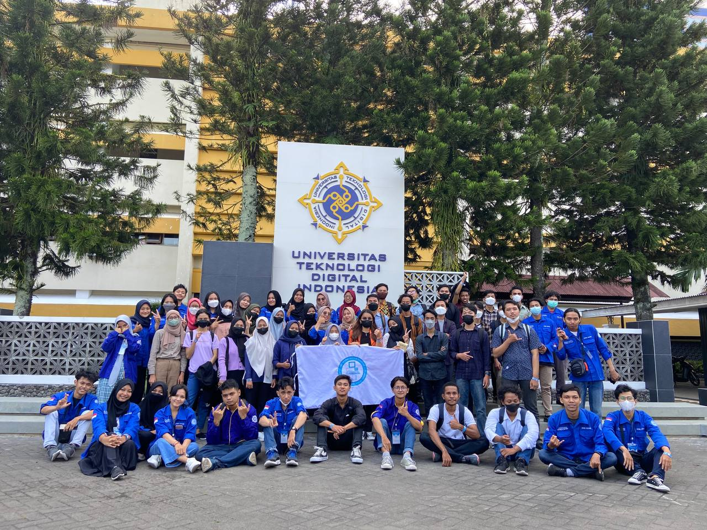

Profil
I am a 5th-semester student studying Back-End development, as evidenced by my participation in the independent campus self-study program at Back-End Skilvul. Currently working on several development projects so I can fill in the gaps in my portfolio. In the future, I hope I can work in the field that I am currently working in
Technologies I've been working with:
- Java
- Javascript
- CSS
- HTML
- Github
- Netlify
- Figma

Organizational Experience
Serves as the daily administrator of the Informatics and Computer UKM in the interest and talent department. Success in bridging the development of interests and talents of members through work programs that have been implemented